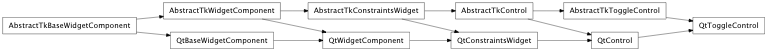
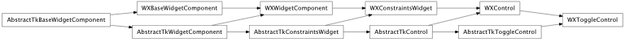

Bases: enaml.components.control.Control
An abstract toggle element.
An element which toggles the value of a boolean field. This is an abstract class which should not be used directly. Rather, it provides common functionality for subclasses such as RadioButton, CheckBox and ToggleButton.
Whether the element is currently checked.
A read only property which indicates whether the user is currently pressing the element.
The text to use as the element’s label.
Fired when the element is toggled.
Fired when the element is pressed.
Fired when the element is released.
How strongly a component hugs it’s contents’ width. Toggles hug their contents’ width weakly by default.
Overridden parent class trait
alias of __NoInterface__

Bases: enaml.backends.qt.qt_control.QtControl, enaml.components.toggle_control.AbstractTkToggleControl
A base class for Qt toggle widgets.
This class can serve as a base class for widgets that implement toggle behavior such as CheckBox, RadioButton and checkable PushButtons. It is not meant to be used directly. Subclasses should implement the ‘create’ and ‘bind’ methods.
Furthermore, the toggled, pressed and released event that is generated by the toolkit widget needs to be bound to the on_toggled(), on_pressed() and on_released() methods.

Bases: enaml.backends.wx.wx_control.WXControl, enaml.components.toggle_control.AbstractTkToggleControl
A base class for wxPython toggle widgets.
This class can serve as a base class for widgets that implement toggle behavior such as CheckBox, RadioButton and checkable PushButtons. It is not meant to be used directly. Subclasses should implement the ‘create’ and ‘bind’ methods.
Furthermore, the toggled, pressed and released event that is generated by the toolkit widget needs to be bound to the on_toggled(), on_pressed() and on_released() methods.